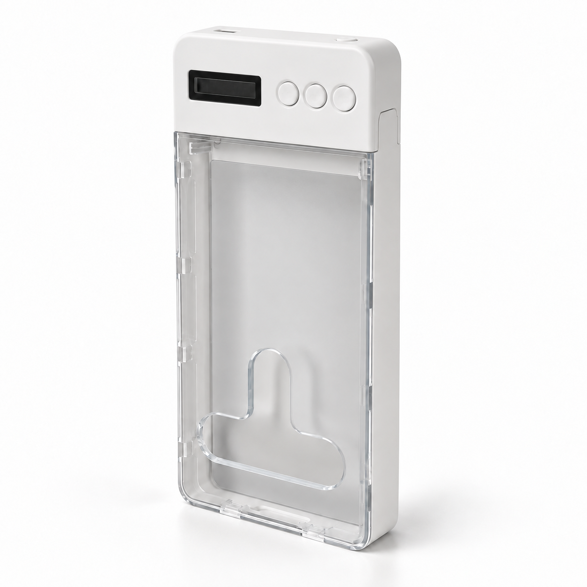

SELECT #01
SELECT #01
TOKI SELECT — 紹介商品・PR
タイムロックケースMoKo スマホタイムロックボックス
Amazonで価格を確認販売元・送料・在庫はリンク先をご確認ください
ついスマホを手に取ってしまう時間に。タイマーで開ける時間を決めるケースです。対応するスマホの大きさ、ロック中に操作できる範囲、緊急解除の方法を販売ページで確かめてからお選びください。
※商品画像はイメージです。実際の製品の仕様・デザインはAmazonの販売ページでご確認ください。
スマホを置いて、本を読む。今日やることを、紙に書く。
自分の時間をつくる、小さな道具を集めました。
紹介商品はAmazonで購入できます。TOKIの直販商品「OFF BOX」は予約を受け付けています。

2026.09.08
AIで書いた人の83%が、直後に自分の文章を引用できませんでした。ただし54人・査読前の研究です。

2026.09.08
就寝前2時間の利用は睡眠とほぼ無関係。差が出たのは「ベッドで使うかどうか」でした。

2026.09.08
有名な「23分15秒」は、引用元の論文に載っていない数字でした。

2026.09.07
「充電器とセット」「帰宅動線の途中」「寝たまま届かない」の3条件で決まります。
SELECT #01
TOKI SELECT — 紹介商品・PR
Amazonで価格を確認販売元・送料・在庫はリンク先をご確認ください
ついスマホを手に取ってしまう時間に。タイマーで開ける時間を決めるケースです。対応するスマホの大きさ、ロック中に操作できる範囲、緊急解除の方法を販売ページで確かめてからお選びください。
※商品画像はイメージです。実際の製品の仕様・デザインはAmazonの販売ページでご確認ください。
 SELECT #02
SELECT #02
TOKI SELECT — 紹介商品・PR
Amazonで価格を確認輸入品のため、お届け予定日もご確認ください
やることを確認するためにスマホを開く。その瞬間に通知とフィードへ持っていかれる。今日の分だけを3×5インチのカードに書き、木の台に立てて机に置く。光らない、鳴らない、他の何かに連れて行かれない。セット内容とカードのサイズは販売ページでご確認ください。
※商品画像はイメージです。実際の製品の仕様・デザインはAmazonの販売ページでご確認ください。

TOKI DIRECT — 予約受付中
スマホをしまって、夜を自分の時間に。
決めた時間だけスマホを開けられなくするケース。2,980円・税込送料込。現物の最終確認中のため予約販売とし、発送前はいつでも全額返金します。
予約ページを見る寝る前にスマホを見続ける。タスクを確認するだけのつもりが、SNSを開く。そんな場面から道具を探します。
機能の多さより、暮らしのどこで役立つか。スマホを置く、紙に書くといった、小さな行動を助けるものを選びます。
商品情報からわかることと、現物での確認が必要なことを分けて案内します。合わない使い方や注意点も伝えます。
TOKI SELECTはAmazonの販売ページをご案内しています。ご購入の契約先・発送元は各販売ページをご確認ください。TOKIが仕入れ・販売するTOKI DIRECTは、OFF BOXの予約をこのストアで受け付けています。
メディア「DetoxNews」で読まれているテーマや製品リクエストを参考に、デジタルとの距離を見直す道具を選んでいます。商品説明・仕様・レビューを参考に紹介し、現物未確認の情報は検証済みとは扱いません。
TOKI SELECTの送料・お届け日・返品条件は、Amazonの各販売ページでご確認ください。TOKI DIRECTは販売開始時に、このサイトで配送・返品条件をご案内します。
睡眠とデジタル距離をテーマにした個人ブランドです。メディア「DetoxNews」で夜の悩みと道具を検証し、このストアで「奪わない道具」を紹介・販売します。